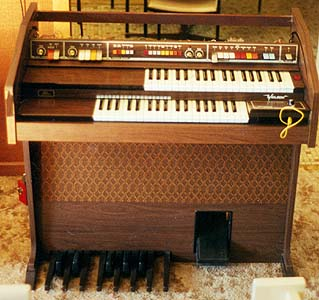
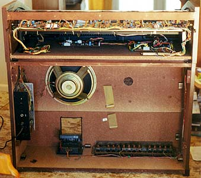

The organ as a source of synthesizer parts.

The Welson Festival 2000
|
The Welson Festival 2000 is an entry level organ from the early 80's. This one I found advertised on the local general store notice board for $30, as a non-working proposition. The advert claimed it had all paperwork and wiring diagrams. A phone call to the seller left me with the impression that I was looking at a top of the line beast. Some what amazingly the seller lived over the road from me, so I walked over for a look.
As soon as I saw it, even with its lid closed, I knew it was entry level. Nothing else could be that small! Opening it revealed that it had two 37 note manuals, and a moderate selection of stops. As previously mentioned, it didn't work. It lit up, and the rhythm light flashed, though there was no sound. There was also a circuit diagram. So I paid the $30 and came back with the ute.
There turned out to be several faults, all pretty minor. The contact in headphone socket had broken, cutting off the speaker, a 3080 had died, disabling the auto accompaniment, and one capacitor in the upper manual keying circuit had died, killing sustain on that key.
With it now working, I spent several evenings studying the circuit diagrams, and experimenting on it, before stripping out the good bits to include in my setup. Below are some of my findings.
What parts were of use?
- Keyboards and associated circuitry.
Both keyboards: the upper and lower manuals were 37 keys. The upper used a change over contact arrangement, each key with a diode, capacitor and several resistors performing part of the sustain and percussive network for that key. The lower was simply a single contact per key, wired in a 12 by X matrix. The circuitry for these was pretty interesting.
The upper manual used a VCO fed into a TOS, then into a pair of keying ICs. These ICs do the same job of a huge PCB of discrete parts in the Lowrey, and do a better job of it too. Each IC handles 22 notes - six pitches by three or four octaves. Each note seems to be handled by a bank of four linked VCAs, feeding out onto four mixed buses (16', 8', 4' and 2'). A 22uf capacitor on each control pin holds the voltage corresponding to the output level. A voltage is pulsed into these capacitors to give percussive notes. A constant voltage will give a constant note. When the costant voltage is removed, a discharge network gives sustain. Both the length of the percussive delay and the length of the sustain are voltage controlled at the keying networks.
This upper manual generation board also includes mixers giving 16' and 8' staircase waveforms out. This board was undoubtely the best part of the deal. It's one disadvantage is it throws off a lot of RFI.
As the sustain and percussion controls were on the upper manual filter board, I also salvaged that. The preset sounds a pretty average, but adding "drawbars" to the direct outputs of the of the generation board will give a much better array of sounds. I have also been running these outputs through my vocal filter to good effect.
The lower manual circuitry is interesting in that most of the work is handled by a single chip, including top octave synthesis and keyboard scanning, as well as the chord structures for the auto-accompanyment. While only 37 keys were being used, the chip appears to be able to deal with a 61 note keyboard. The real downside of this circuitry was that there is provision for a single sustain envelope: touch any other key during sustain, and all sustain is killed to be replaced by the new note.
Possible use:
These keyboards are about the same depth of the keyboards used by Roland. They are made entirely of plastic and are designed to sit in steel rails. The upper manual and its circuitry have been salvaged to do string ensemble type work. The lower manual has been lobbed into the parts bin.
- Pedal board and circuitry.
This organ had a one octave pedal board. Once again a LSI chip handles most of the work. It was very poor in this case: fixed envelope and no sustained note capabilities.
Possible use:
For the circuitry, in this case, none. The pedals and switch contacts could be wired up as described in the pedal board module..
- Amplifier and speakers.
As this was an entry level organ, it contained a single (dual cone) speaker and amplifier. The amp can't be much more than 10W. Nothing exciting. In fact, when situated near the upper manual generation board, it picks up the RFI, amplifies it, and then proceeds to cook the capacitor in the output filter network of the amp.
- Expression pedal.
This one was pretty good, though almost all plastic in construction. It uses the lamp - metal vane - CDS cell arrangement.
Possible use: Set it up so it gives a voltage out, then use it to control any aspect of the synth you like. This will most likely end up controlling the multi-VCA master volume control I am working on.
- Cabinet.
This cabinet is entirely chipboard, laminated with plastic woodgrain. Whatever they used for glue didn't go the distance, and the veneer is all falling off. The lower part of the cabinet is held together by clips, and knocks down to reduce shipping volume.
Possible use: I may use the cabinet to hold a couple of speakers, or I may just get rid of it.
- Reverb Tank.
None in this organ.
- Rhythm Unit.
The rhythm unit in this organ is a classic combination of ringing twin-T oscillators and a few filters for handling the noise based effects. The rhythms themselves were attrocious. The auto accompanyment used 3080s and 3280s, so they are worth salvaging.
Possible use: I rigged up the Drum simulators so they can be triggered from external inputs. The rhythm chip will never see power again.
- Other parts.
Again, the "Tabs" or "Stops" are specialized switches, and not much use, except for where the whole upper manual filter board was salvaged.
Many of the chips in this organ were custom parts. As described above, some where quite usable when salvaged with their associated circuitry. The OTAs were of course quite usable. Other chips included common CMOS and common op-amps.
It turns out that these chips (e.g. M108) were used across several brands of organs, and even in some synthesizers. I have seen the keyer chips (S10430) from the upper manual listed as second-hand spares for US$150 each!

The Welson when viewed from behind.
Article, art & design copyright 1999 by Ken Stone
Modular Synth Home Disclaimer
|